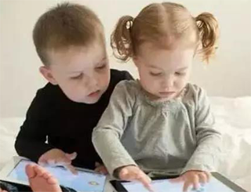

孩子玩手机，你究竟是在怕什么？（的确如此！）！
手机玩多了，肯定对孩子影响不好。但你视手机为洪水猛兽，连碰都不让孩子碰，也会出大问题。 对于孩子来说，这属于他童年时期的一部分，就像我们小时候的《新白娘子传奇》一样。至今我都没完整地看过这部人尽皆知的电视剧，因为那时我们家没电视，只有一柜子书。可每每跟大家聊起童年时，我还是会觉得缺点什么。 因此，玩手机不是完全不可以，但要规定玩的时间、玩的内容，还要看孩子的年龄。 这与人们的好奇心与逆反心理有关。玩手机也是，你越不让孩子玩，孩子越好奇究竟手机有多好玩？为啥爸爸妈妈整天舍不得丢手，却不允许我玩？同时呢，这种压制还会引起孩子的逆反心理，你不让我玩，我偏要玩，想尽一切办法去玩，哪怕去偷！ 所以，在教育孩子时，我们不宜硬性禁止，应该善于做疏导教育。比如有多少少女是因为父母的硬性禁止而投入渣男怀抱的呢？如果当时父母没逼那么恨，或许俩人还走不到一起。

父母教育
前两天我坐地铁去上课，有位妈妈抱着一个大约八九个月的婴儿，妈妈拿着手机在看，宝宝也一眼不眨地盯着手机看。妈妈玩了一会儿发现宝宝也正盯着手机，就打算收起来，可小孩子不干啦，直接哭起来，直到妈妈把手机给到孩子手里，才止住哭声。其实，这么大的孩子，是很容易被转移注意力的，不是非得靠电子保姆来哄。记得之前有个朋友说，他家宝宝从添加辅食开始就要靠手机，才能哄到餐椅上静坐下来，一边玩手机，一边吃饭。孩子在两岁半前最好不要看手机，两岁半后要可以在规定的时间内玩上一小会儿。我有个朋友说，他怕对小孩子视力不好，也怕宝宝沉迷于手机，就不敢给娃玩。结果孩子跟爷爷奶奶住一起后，看到爷爷奶奶打电话就拼命地把手机抢过来玩。跟老人一起去小区活动时，看见人家别人在玩手机，就站在人家身旁痴迷地看着，不肯走开。还有一个朋友，禁止他上小学的儿子玩手机，结果孩子却把班主任的手机偷回来玩。听到这两位家长的讲述，我想起了心理学上有个名词叫做“禁果效应”。越是禁止的东西，人们越要得到手；越希望掩盖某个信息，越能激起人们的窥探欲 。这种由于单方面的禁止和掩饰而造成的逆反现象，即心理学上的“禁果效应”。
孩子可以玩手机，但可不能随便玩，首先我们得规定时间，而且是跟孩子一起协商规定，比如15分钟后主动把手机还给妈妈，如果不能还，那下次就坚决不给玩。 般不建议让孩子用手机看动画片等视频类信息，不仅仅是因为孩子在看视频类内容时，是在被动性地接收信息，会养成大脑的惰性，不利于智力的成长。还因为这些内容用电视也可以看，没必要离那么近去看手机，影响视力。 现在有很多宝宝玩的益智小游戏开发的非常不错，里面还有时间设置，我一般都给涵涵设置成15分钟，毕竟是小孩子，虽然她的自控能力相对会好一点，但还是会有入迷舍不得放手的时候。 所以，一些益智类的小游戏是可以给孩子玩，而且还有好处呢。但坚决不要给娃玩有关暴力色情的游戏。很多APP都有儿童模式，可以防止孩子看不该看的东西。我们大人在给孩子玩之前要设置好。